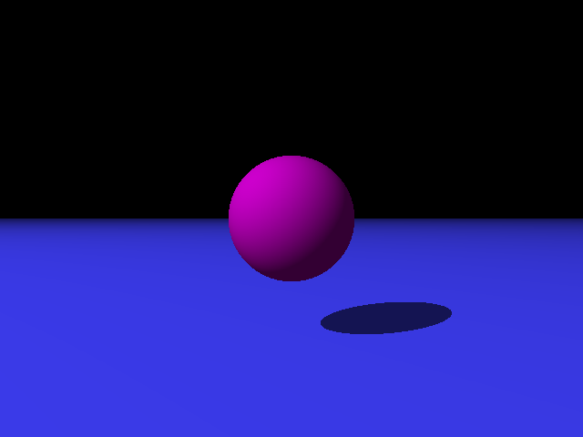
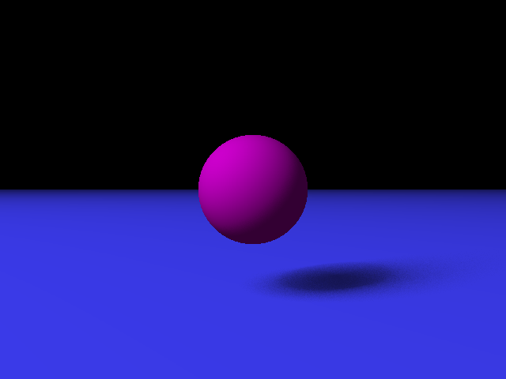
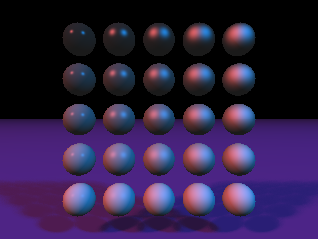

Sphere with point light:
Sphere with area light of 64:
For my final project, I decided to implement soft shadows for my raytracer. In order to implement this, I treated each point light in a particular scene as a light with a specified area, and took sample points from that area light. For each point I intersected, I generated sample points on the area light and calculated the average amount of shading for that point.
Before:
After:
My final raytracer is based heavily off of Ian Dunn's own raytracer, and so I am not responsible for the very organized design of my final raytracer. However, my old raytracer did have a very similar structure of the Object classes, which made it very easy to add features to my raytracer. This was most helpful when intersecting rays on different objects, as well as calculating normals for points on different objects. In the final raytracer, this structure can be found in the "Objects" directory.
Ian Dunn's Lectures